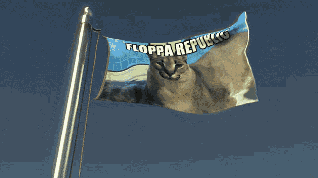

Typically nocturnal, the caracal is highly secretive and difficult to observe. It is territorial, and lives mainly alone or in pairs. The caracal is a carnivore that typically preys upon small mammals, birds, and rodents. It can leap higher than 4 metres (12 ft) and catch birds in midair. It stalks its prey until it is within 5 m (16 ft) of it, after which it runs it down and kills its prey with a bite to the throat or to the back of the neck. Both sexes become sexually mature by the time they are one year old and breed throughout the year. Gestation lasts between two and three months, resulting in a litter of one to six kittens. Juveniles leave their mothers at the age of nine to ten months, though a few females stay back with their mothers. The average lifespan of captive caracals is nearly 16 years.
The caracal is a slender, moderately sized cat characterised by a robust build, a short face, long canine teeth, tufted ears, and long legs. It reaches nearly 40–50 cm (16–20 in) at the shoulder. The tan, bushy tail extends to the hocks. The caracal is sexually dimorphic; the females are smaller than the males in most bodily parameters. The prominent facial features include the 4.5-cm-long black tufts on the ears, two black stripes from the forehead to the nose, the black outline of the mouth, the distinctive black facial markings, and the white patches surrounding the eyes and the mouth. The eyes appear to be narrowly open due to the lowered upper eyelid, probably an adaptation to shield the eyes from the sun's glare. The ear tufts may start drooping as the animal ages. The coat is uniformly reddish tan or sandy, though black caracals are also known. The underbelly and the insides of the legs are lighter, often with small reddish markings.[19] The fur, soft, short, and dense, grows coarser in the summer. The ground hairs (the basal layer of hair covering the coat) are denser in winter than in summer. The length of the guard hairs (the hair extending above the ground hairs) can be up to 3 cm (1.2 in) long in winter, but shorten to 2 cm (0.8 in) in summer.[20] These features indicate the onset of moulting in the hot season, typically in October and November. The hind legs are longer than the forelegs, so the body appears to be sloping downward from the rump.
